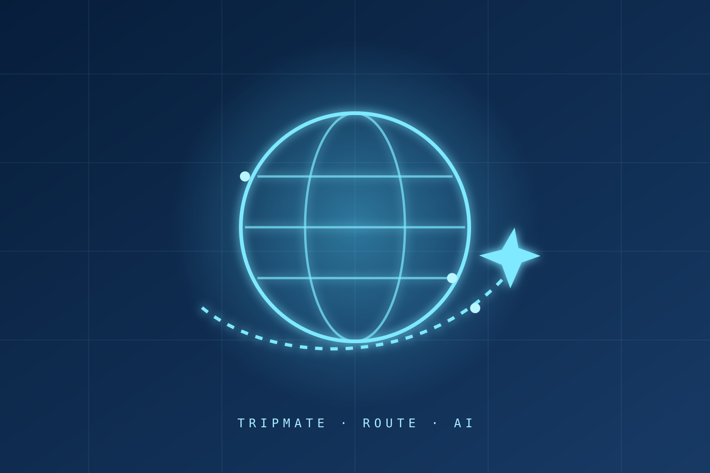

Đặt câu hỏi
Không vội chọn mô hình. Tôi bắt đầu bằng việc lắng nghe bối cảnh, gọi đúng tên vấn đề và tìm tín hiệu đáng tin giữa rất nhiều dữ liệu.
Quan sát · dữ liệu · tư duy định lượng
Một hành trình được xây từ những câu hỏi
Từ điều cần được làm rõ, đến hệ thống có thể tin cậy, rồi một trải nghiệm đủ gần để tạo ra thay đổi.
Bắt đầu từ câu hỏiMỗi dự án bắt đầu bằng một điểm mơ hồ. Tôi tách nó thành những phần có thể quan sát, xây từng lớp có chủ đích và chỉ gọi là hoàn thành khi người dùng hiểu được điều hệ thống đang làm.
Không vội chọn mô hình. Tôi bắt đầu bằng việc lắng nghe bối cảnh, gọi đúng tên vấn đề và tìm tín hiệu đáng tin giữa rất nhiều dữ liệu.
Tôi biến điều còn mơ hồ thành một hướng đi có thể thử: một giả thuyết, một luồng trải nghiệm và một cách đo xem nó có đáng để tiếp tục hay không.
Một ý tưởng tốt cần một cấu trúc tốt: luồng xử lý rõ ràng, bộ nhớ đúng chỗ, API có thể kiểm thử và những giới hạn được nói thẳng.
Khi các mảnh ghép kết nối, hệ thống bắt đầu trả lời được câu hỏi ban đầu. Tôi kiểm thử, tinh chỉnh và đưa nó đến gần hơn với một trải nghiệm thật.
Điều còn lại không chỉ là một demo. Đó là một sản phẩm có thể giải thích, một kết quả có thể kiểm chứng và một bài học để bước tiếp.
Healthcare AI Chatbot nối tri thức, triệu chứng và hội thoại trong một trợ lý có bộ nhớ dài hạn.
Xem dự ánJD Intelligence Agent biến mô tả tuyển dụng thô thành bản đồ yêu cầu, câu hỏi phỏng vấn và bước chuẩn bị cụ thể.
Xem dự án
TripMate phối hợp các agent để biến một câu yêu cầu tự nhiên thành lịch trình có thể dùng được.
Xem dự án04 · CÂU HỎI TIẾP THEO
Nếu bài toán đủ thú vị, tôi muốn cùng bạn đi qua cả ba lớp: hiểu đúng, xây chắc và tạo ra điều có ích.
tranthanhdat.hvt@gmail.com